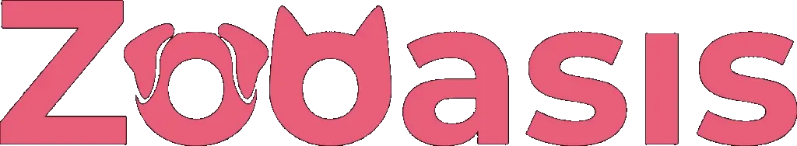

Cada año miles de perros PPP — Rottweiler, Pitbull, Staffordshire y otras razas — acaban en protectoras o en riesgo de sacrificio simplemente por su apariencia. La mayoría son perros equilibrados, cariñosos y perfectamente adoptables. Solo necesitan a alguien que les dé una oportunidad.
💡 Antes de adoptar un perro PPP recuerda: necesitas licencia municipal, seguro RC de mínimo 120.000€, certificado de aptitud psicológica y antecedentes penales sin delitos de violencia. Tienes 3 meses desde la adopción para tramitarlo. 👉 Guía completa de requisitos PPP
🐾 Protectora recomendada por Maya: Conocemos personalmente el trabajo de Zooasis y confiamos en ellos al 100%. Si estás pensando en adoptar, empieza por aquí.

⭐ Recomendada por MayaProtectora de animales comprometida con el rescate, cuidado y protección de perros que necesitan una segunda oportunidad. Un equipo con vocación real que trabaja cada día para encontrar hogares responsables.
Visitar Zooasis →
¿Cómo es el proceso de adopción de un PPP?
Contacta
Escribe a la protectora, rellena su formulario y explica tu situación: vivienda, experiencia con perros, disponibilidad.
Visita
La mayoría organizan visitas para que conozcas al perro antes de decidir. Algunos hacen entrevistas previas.
Tramita
Tienes 3 meses para tramitar licencia PPP, seguro RC y certificados. La protectora suele asesorarte en el proceso.
¿Qué esperar de un Rottweiler adoptado?
Muchos Rottweiler en protectoras llegan con un pasado difícil — abandono, maltrato o simplemente dueños que no podían seguir cuidándolos. Esto no significa que sean perros problemáticos. Con paciencia, constancia y la educación adecuada, la gran mayoría se adaptan perfectamente a su nuevo hogar.
El periodo de adaptación puede durar entre 2 y 8 semanas. Durante ese tiempo el perro estará explorando su nuevo entorno y estableciendo vínculos. La clave es darle espacio, rutina y mucha calma.
🐾 Maya es la prueba: con educación, amor y consistencia, un Rottweiler puede ser el compañero más leal que imagines. Si estás pensando en adoptar, estas asociaciones están esperando tu mensaje.
¿Tienes un PPP y quieres difundir su adopción?
Si tienes un Rottweiler u otro perro PPP que necesita hogar urgente y quieres que lo difundamos desde la comunidad de Maya, escríbenos a hola@mayarottweiler.com. Haremos todo lo posible por ayudar. 🐾